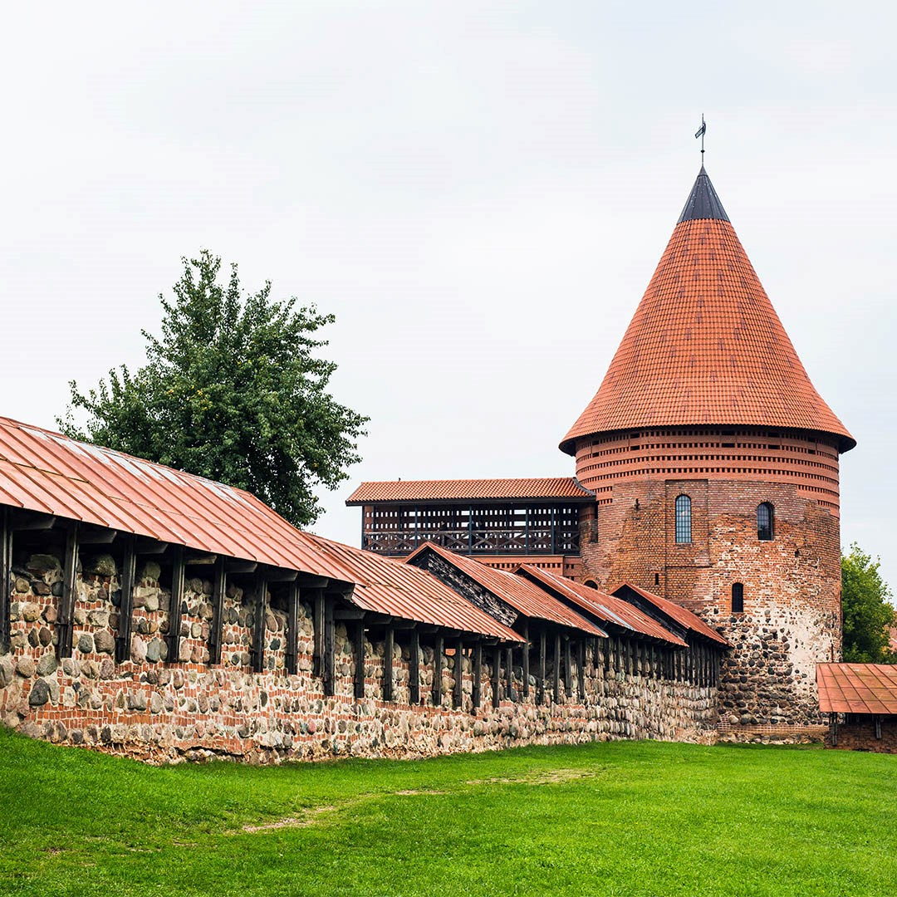

Pažaislio vienuolynas
Tai vienas nuostabiausių baroko architektūros ansamblių Lietuvoje. Ansamblis suprojektuotas italų architekto Džiovanio Batistos Fredianio, išpuoštas Lombardijos skulptūros meistrų lipdiniais ir Florentiečio tapytojo Mykolo Arkangelo Palonio freskomis...

Kauno pilis
Nemuno ir Neries santakoje stovi pilis, kuri buvo statyta kryžiuočių antpuoliams atremti. Todėl tai ne tik seniausia mūrinė pilis Lietuvoje, bet ir vienintelė pilis, turinti dvi eiles gynybinių sienų. Aplink šį gotikinį gynybinį statinį...
Kauno Rotušė
Tai pati seniausia ir pagrindinė miesto aikštė, kurioje alsuoja gotikos, baroko ir ankstyvojo klasicizmo dvasia. Pagrindinis šios aikštė pastatas yra Kauno Rotušė, dar vadinama „Baltoji gulbė“. Kuri šį vardą gavo dėl savo formų...
Kauno gatvės menas
Sunku pasakyti, kuriais metais ant Kauno sienų pirmąkart nelegaliai parašytas žodis, tačiau sovietų okupacijos metais tikrai būta anoniminių pasisakymų, kurie įkvėpė savo drąsa. Atkūrus Nepriklausomybę, dažų flakonų pardavimai...
Tarpukario modernizmo architektūra
Tarpukario architektūra – Kauno vizitinė kortelė. Po Pirmojo pasaulinio karo, Lietuvai atkuriant valstybingumą, istorinių aplinkybių dėka, Kaunas tapo svarbiausiu Lietuvos miestu. Kaune susitelkė valdžios institucijos, inteligentija...
Nacionalinis M. K. Čiurlionio dailės muziejus
Nacionalinis M. K. Čiurlionio dailės muziejus yra vienas seniausių ir didžiausių dailės muziejų Lietuvoje. Tai yra vienintelė vieta pasaulyje, kur sukauptas beveik visas įžymiausio lietuvių dailininko, kompozitoriaus, literato ir visuomenės...
Funikulieriai: Aleksoto funikulierius, Žaliakalnio funikulierius
Vienintelis Lietuvos miestas turi šią seniausią transporto priemonę. Kauno Žaliakalnyje ir Aleksote esantys funikulieriai šiuo metu yra naudojami ir kaip susisiekimo priemonė...
Kiemo galerija
Prieš daugiau nei dešimtmetį į namą šiame kieme atsikraustęs lietuvių menininkas Vytenis Jakas pastebėjo, kad kaimynai susvetimėję ir pamiršę bendrą kiemo praeitį. Čia gyvenusių žydų šeimų nuotraukas ėmęs perkėlinėti...
Aleksoto apžvalgos aikštelė
Aleksoto apžvalgos aikštelė – viena mylimiausių kauniečių vietų, nuo kurios atsiveria įsimylėti Kauną priverčianti panorama. Beje, būtent nuo čia dažniausiai ir prasideda ekskursijos po Kauną miesto svečiams!
IX forto muziejus
IX fortas – valstybės saugomas istorijos ir architektūros paminklas. IX forte veikia muziejus, kuriame lankytojai supažindinami su Kauno tvirtovės gynybinių įtvirtinimų karine architektūra, Pirmojo pasaulinio...